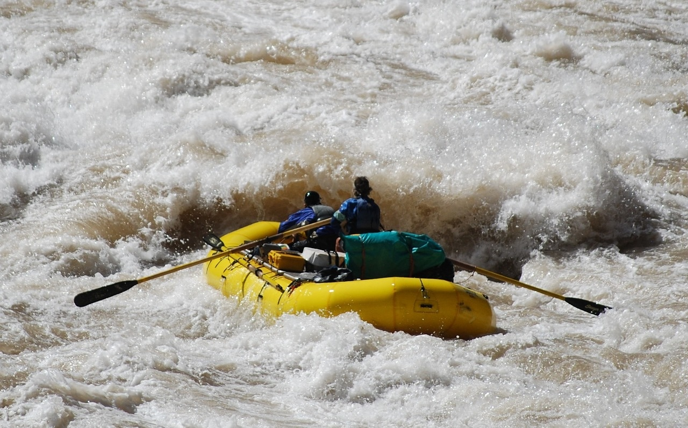
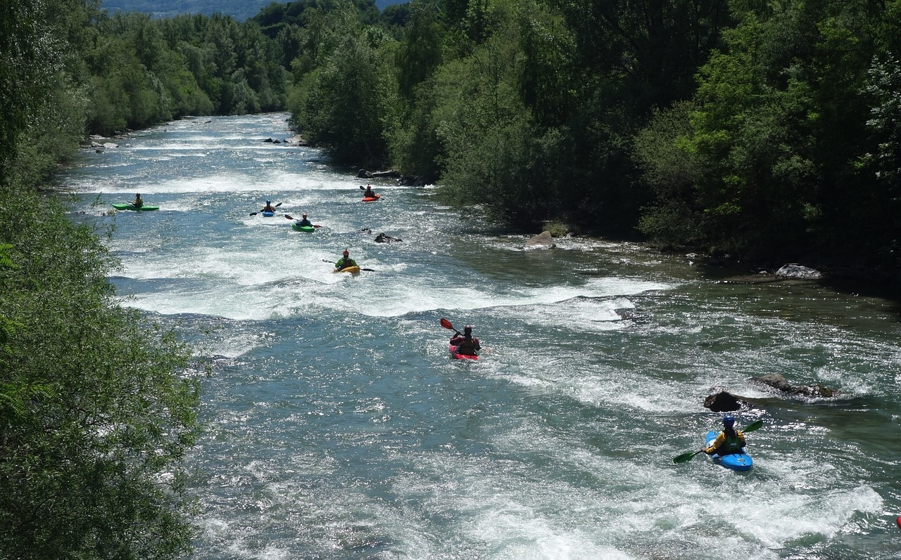
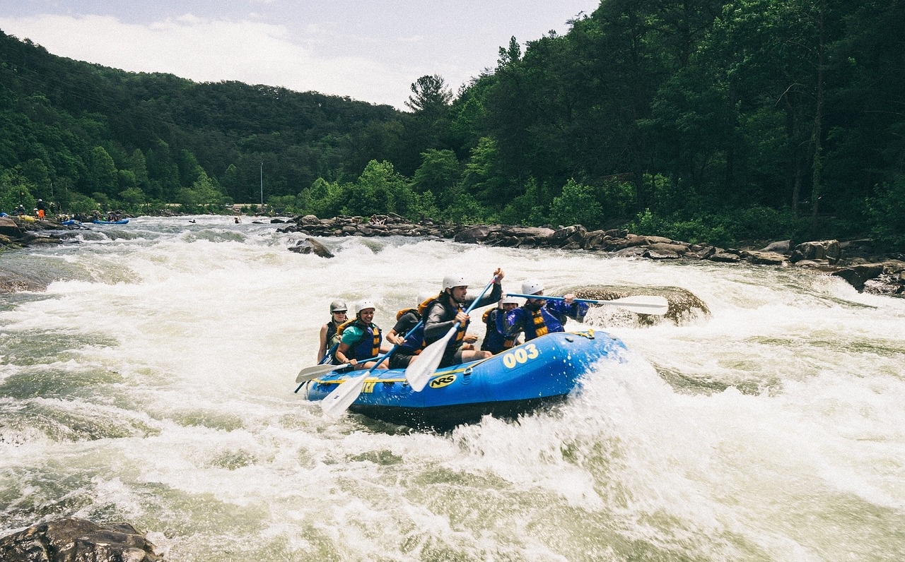

Grand Canyon Rapids
The Grand Canyon rapids offer an exciting adventure for the thrill seeking adventurer. With rapids that rank from class III to class IV, this trip isn't for the faint of heart or the inexperienced rafter.
Provo River Kayaking
With class I to class II rapids, the Provo River offers the perfect beginner kayaking experience. Learn how to navigate a river and handle a kayak in preparation for more intense river trips.
Provo River White Water
The Provo River offers family friendly adventures with rapids that rank from class I to class II. With our experienced guides, this adventure is the perfect family trip.